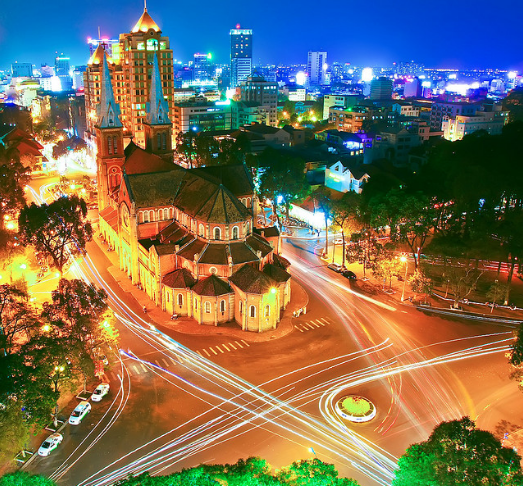
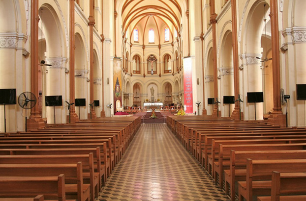
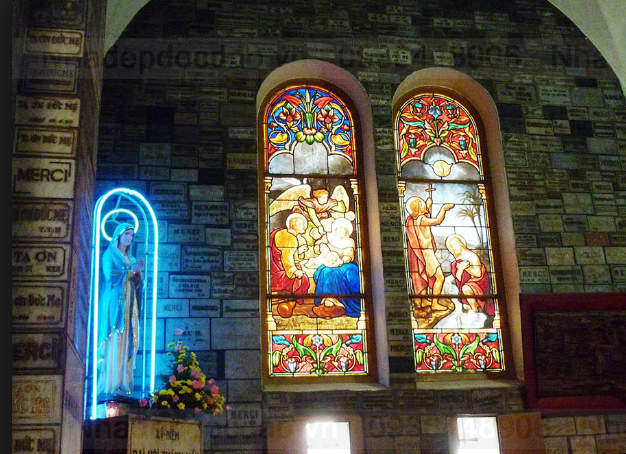
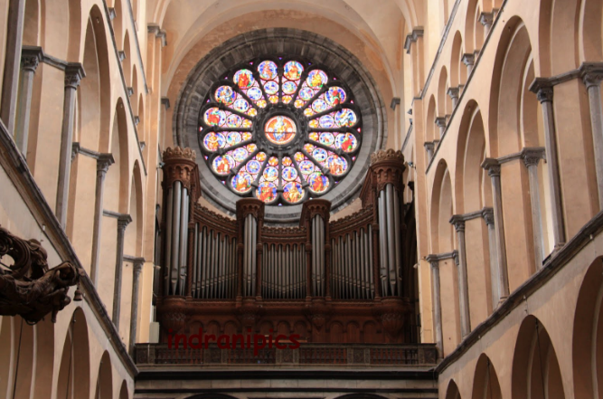

Nằm giữa trung tâm quận 1 thành phố Hồ Chí Minh, Nhà thờ Đức Bà đồ sộ với kiến trúc cổ của Pháp, không gian rộng thoáng từ bên ngoài vào đến bên trong thánh đường, đây cũng là một trong những biểu tượng của Sài Gòn, là điểm đến quen thuộc của giới trẻ đất Sài Thành và còn là địa điểm nằm trong danh sách ghé thăm đầu tiên của khách du lịch trong và ngoài nước khi lần đầu đặt chân đến đây.

Nhà thờ Đức Bà là cách gọi gắn gọn của Nhà thờ chính tòa Đức Bà Sài Gòn và có tên chính thức là Vương cung thánh đường chính tòa Đức Mẹ Vô nhiễm Nguyên tội. Kiến trúc của nhà thờ được xây dựng theo đồ án của kiến trúc sư J.Bourard với phong cách kiến trúc Roman pha trộn với phong cách kiến trúc Gothic, bao gồm có thánh đường, tháp chuông và công viên bên ngoài.
1.Tòa thánh đường
Thiết kế bên trong tòa thánh đường
2.Các bàn thờ bên trong
Các bàn thờ ở bên trong đều được khắc tinh tế bằng đá cẩm thạch nguyên khối. 56 ô cửa kính nhiều màu sắc ghép lại với nhau tạo nên hình ảnh rất đẹp. Tất cả các đường nét, gờ chỉ, hoa văn đều tuân thủ theo hình thức Roman và Gothic tôn nghiêm và trang nhã.
Họa tiết cửa sổ nhiều màu sắc và hình ảnh độc đáo
Sự giao thoa kiến trúc bên trong nhà thờ Đức Bà quận 1
Nhà thờ Đức Bà không chỉ là một kiến trúc nghệ thuật nổi tiếng mà còn là nhân chứng lịch sử của Sài Gòn. Tồn tại từ những năm kháng chiến chống Pháp, luôn đứng sừng sững chứng kiến mọi biến động, sự thay đổi và phát triển của thành phố Hồ Chí Minh cũng như Việt Nam. Nơi đây luôn luôn thu hút hàng triệu khách du lịch trong và ngoài nước hàng năm.